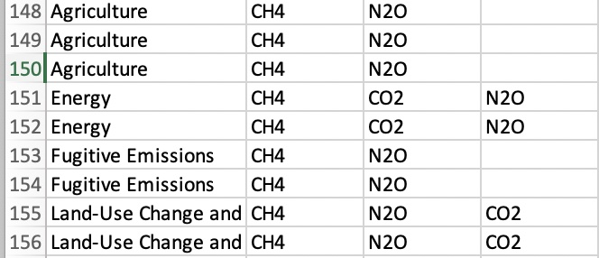
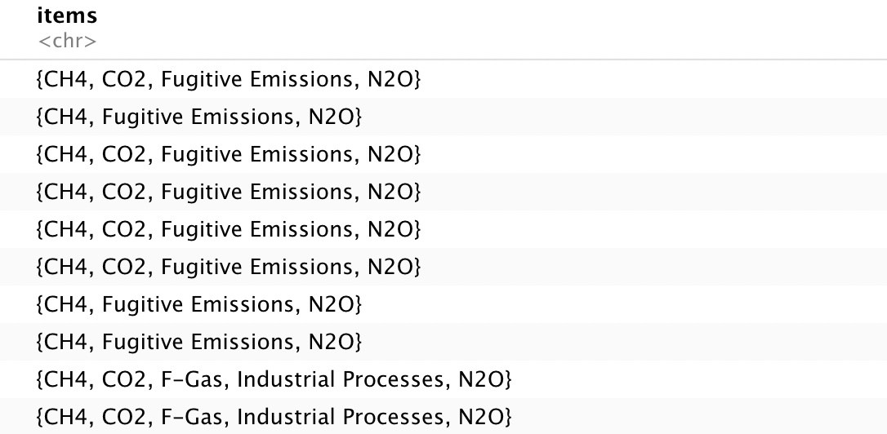
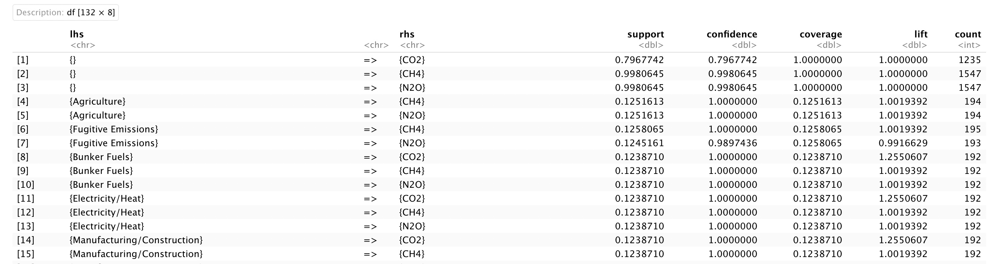
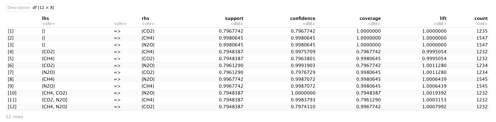
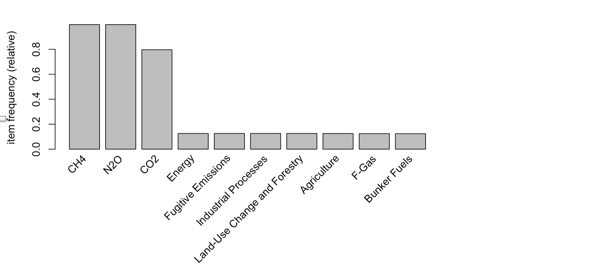
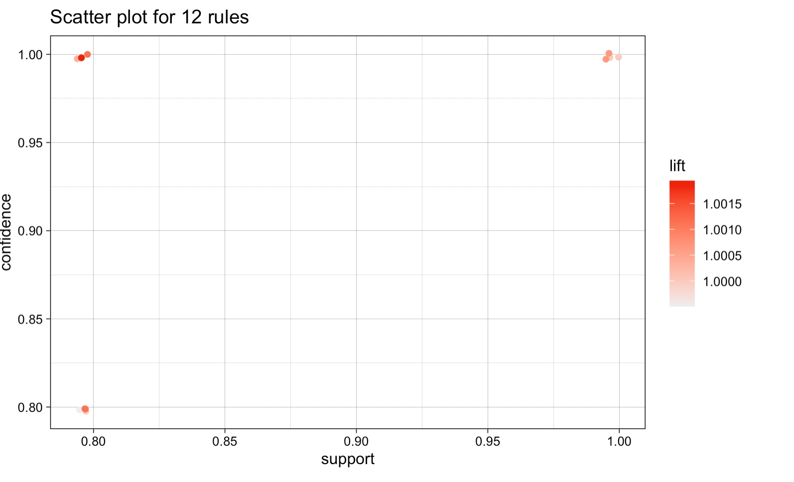
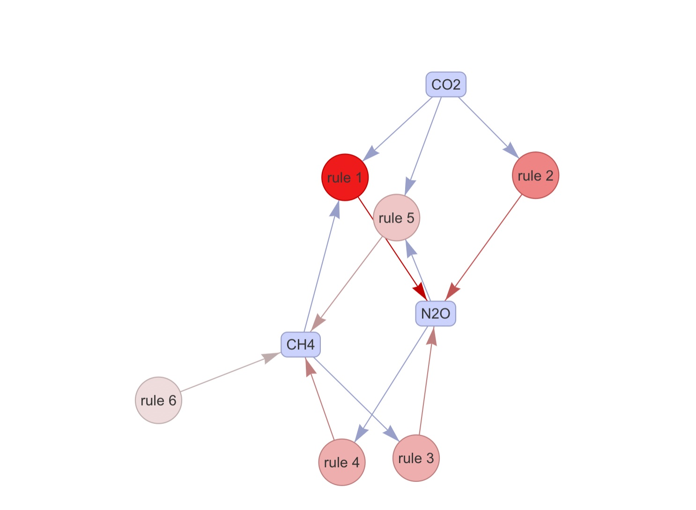
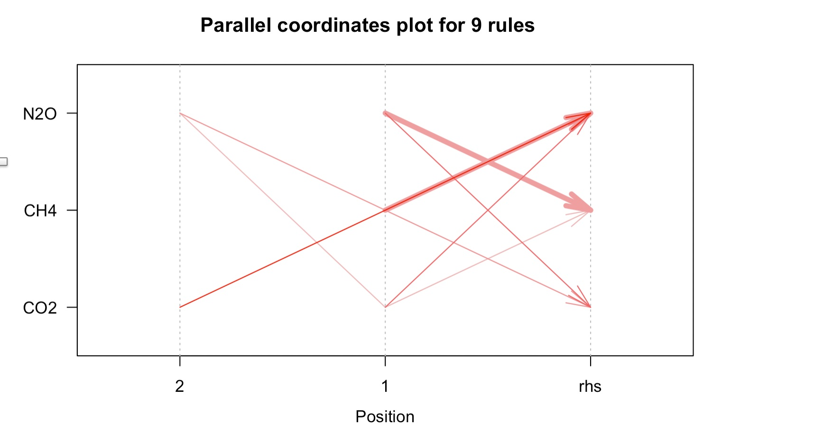

ARM (Association Rule Mining) is a data mining technique used to identify relationships and associations between items in a dataset. It involves analyzing large datasets to find patterns, correlations, and associations among the items. Support, confidence, and lift are three common measures used in ARM. Support is the frequency with which an item or itemset appears in the dataset. It is calculated as the number of transactions containing the item or itemset divided by the total number of transactions in the dataset. Confidence measures the strength of the relationship between two items in the dataset. It is calculated as the number of transactions containing both items divided by the number of transactions containing the first item. Lift measures the extent to which the presence of one item affects the presence of other items
The Apriori algorithm is a popular algorithm used for Association Rule Mining (ARM), a data mining technique used to identify relationships and associations between items in a dataset. The algorithm works by identifying frequent itemsets, which are groups of items that occur together frequently in a dataset, and then generating association rules from these itemsets. The algorithm works in the following steps:
- Set a minimum support threshold: The minimum support threshold is the minimum frequency with which an itemset must occur in the dataset to be considered frequent. This threshold is set by the user.
- Identify frequent 1-itemsets: The algorithm scans the dataset to identify all 1-itemsets that occur with a frequency greater than or equal to the minimum support threshold.
- Generate candidate itemsets of length k: The algorithm generates candidate itemsets of length k by joining frequent (k-1)-itemsets. For example, if the frequent 1-itemsets are {A, B, C}, then the candidate 2-itemsets are {AB, AC, BC}.
- Prune infrequent candidate itemsets: The algorithm scans the dataset again to count the frequency of each candidate itemset. Any candidate itemsets that occur with a frequency less than the minimum support threshold are pruned and not considered in the next iteration.
- Repeat steps 3 and 4 until no more frequent itemsets can be found: The algorithm repeats steps 3 and 4 to generate candidate itemsets of increasing length until no more frequent itemsets can be found.
- Generate association rules: Once all frequent itemsets are identified, the algorithm generates association rules from these itemsets. Association rules are statements of the form "If A then B", where A and B are itemsets. The confidence of an association rule is the percentage of transactions containing A that also contain B.
- Used transaction data: transDatav2.csv.
Link to the dataset: Dataset
Link to the R code: Code
Transaction dataset Frequent Items sample 
ARM can be used to analyze data from energy usage in buildings and identify patterns that are associated with higher GHG emissions. By analyzing the data, it may be possible to identify which activities are contributing the most to emissions, and to develop strategies to reduce emissions.
- CO2: ARM can be used to analyze data related to energy usage, transportation, and other activities that produce CO2 emissions. By identifying patterns and relationships between different variables, such as energy usage, transportation methods, and building materials, it may be possible to develop strategies to reduce CO2 emissions.
- CH4: ARM can be used to analyze data related to agricultural and waste management activities that produce CH4 emissions. By identifying patterns and relationships between different variables, such as types of waste, waste management methods, and agricultural practices, it may be possible to develop strategies to reduce CH4 emissions.
- N2O: ARM can be used to analyze data related to agricultural and industrial activities that produce N2O emissions. By identifying patterns and relationships between different variables, such as fertilizer usage, agricultural practices, and industrial processes, it may be possible to develop strategies to reduce N2O emissions.
- F gases: ARM can be used to analyze data related to industrial processes and equipment that produce F gases, such as refrigerants and insulating materials. By identifying patterns and relationships between different variables, such as types of equipment, maintenance practices, and production processes, it may be possible to develop strategies to reduce F gas emissions.
Top 15 Rules for Support, Confidence, and Lift

Frequent item sets with support 0.35 and confidence 0.40
Support: This parameter sets the minimum support level for a rule to be considered interesting. In the context of GHG pollutants, support represents the proportion of transactions (or cases) that contain both the antecedent and consequent of the rule. For example, a rule might specify that high levels of fertilizer use are associated with high levels of N2O emissions. The support level for this rule would be the proportion of cases in which both high fertilizer use and high N2O emissions were observed. In this case, the support level is set to 0.35, meaning that a rule must appear in at least 35% of the cases to be considered interesting.

Confidence: This parameter sets the minimum confidence level for a rule to be considered interesting. In the context of GHG pollutants, confidence represents the proportion of cases that contain the antecedent (e.g., high fertilizer use) that also contain the consequent (e.g., high N2O emissions). In this case, the confidence level is set to 0.4, meaning that a rule must have a confidence of at least 40% to be considered interesting.
Top 10 Frequently occuring items in the given transaction data
The top 10 emissions you listed, including CH4, N2O, CO2, energy, fugitive emissions, industrial process, land usage, F gas, agriculture, and bunker fuels, represent a wide range of sources and types of greenhouse gas emissions. Analyzing the associations between these different emissions can provide insights into the factors that contribute to high levels of emissions and suggest strategies for reducing those emissions. For example, an analysis of the associations between these different emissions might reveal that there is a strong association between agriculture-related emissions (such as N2O from fertilizer use) and land usage. This association might suggest that reducing land usage for agriculture or implementing more sustainable agricultural practices could help to reduce N2O emissions and other GHG emissions associated with agriculture. Similarly, an analysis might find that there is a strong association between energy-related emissions (such as CO2 from fossil fuel combustion) and industrial processes. This association might suggest that improving energy efficiency in industrial processes or transitioning to cleaner sources of energy could help to reduce overall CO2 emissions. By analyzing the associations between different types of emissions, it is possible to identify patterns and relationships that can inform strategies to reduce greenhouse gas emissions. Ultimately, reducing emissions from all of these sources will be necessary to mitigate the impact of climate change and work towards a more sustainable future.
Bar Chart displaying top 10 items 
Following Graphs shows the association between the GHG pollutants
The result of association analysis in GHG emissions provides insights into the patterns and relationships between different variables that contribute to greenhouse gas emissions. By analyzing the associations between variables, it is possible to identify factors that are associated with higher emissions and develop strategies to reduce those emissions. For example, let's say that an association rule mining analysis of GHG emissions data found a strong association between the use of certain types of refrigerants and the emission of F gases. This association might suggest that replacing those refrigerants with more environmentally friendly alternatives could reduce F gas emissions. Similarly, an analysis of agricultural data might find an association between the use of certain fertilizers and the emission of N2O. This association might suggest that reducing the use of those fertilizers or switching to alternative fertilizers could help to reduce N2O emissions. In both cases, the associations discovered through association rule mining can be used to inform strategies to reduce greenhouse gas emissions. By identifying the factors that contribute to emissions and developing strategies to mitigate those factors, it is possible to reduce overall GHG emissions and work towards a more sustainable future.
Association rule mining can reveal complex relationships between GHG pollutants. By analyzing patterns and relationships between GHG pollutants, I have uncovered insights into how they interact with each other and the environment. Certain types of emissions may be more strongly associated with each other. Based on the association rules, you may have identified which GHG pollutants tend to be emitted together and which sources of emissions are more likely to be associated with each other. Certain industries or sectors may be responsible for a significant proportion of GHG emissions.
If you have identified specific GHG emissions that are associated with certain industries or sectors, this information can be used to develop targeted strategies to reduce emissions in those areas. Further analysis may be necessary. Association rule mining is just one tool for analyzing GHG emissions data, and it may not capture all of the complexities of the relationships between different types of emissions. Additional analysis and modeling may be necessary to fully understand the drivers of GHG emissions and to develop effective strategies for reducing them.